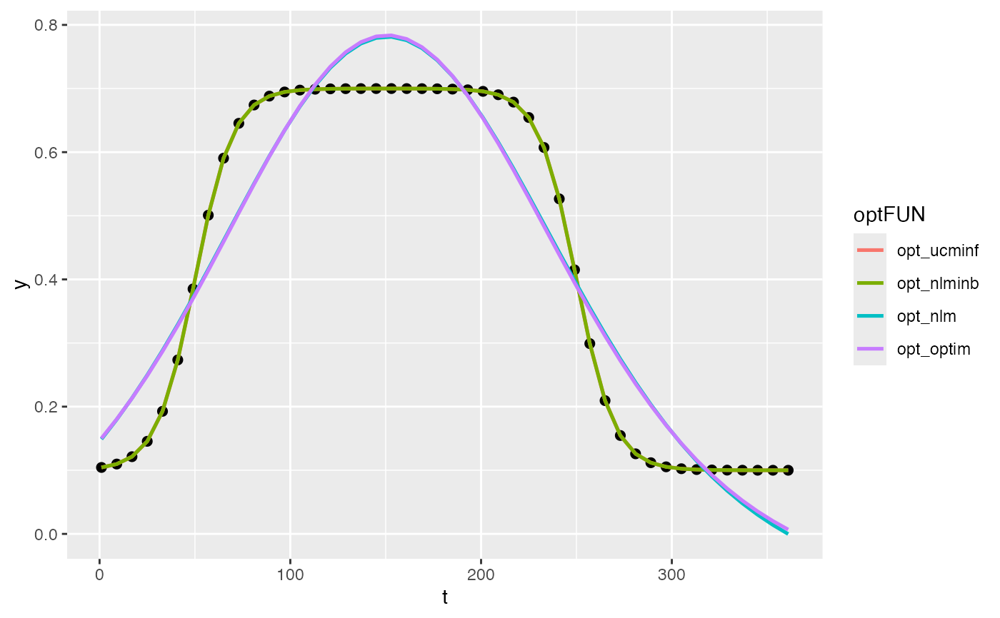

I_optimx is rich of functionality, but with a low computing
performance. Some basic optimization functions are unified here, with some
input and output format.
opt_ncminf General-Purpose Unconstrained Non-Linear Optimization,
see ucminf::ucminf().
opt_nlminb Optimization using PORT routines, see stats::nlminb().
opt_nlm Non-Linear Minimization, stats::nlm().
opt_optim General-purpose Optimization, see stats::optim().
opt_ucminf(par0, objective, ...) opt_nlm(par0, objective, ...) opt_optim(par0, objective, method = "BFGS", ...) opt_nlminb(par0, objective, ...)
| par0 | Initial values for the parameters to be optimized over. |
|---|---|
| objective | A function to be minimized (or maximized), with first argument the vector of parameters over which minimization is to take place. It should return a scalar result. |
| ... | other parameters passed to |
| method | optimization method to be used in |
convcode: An integer code. 0 indicates successful convergence.
Various methods may or may not return sufficient information to allow all
the codes to be specified. An incomplete list of codes includes
1: indicates that the iteration limit maxit had been reached.
20: indicates that the initial set of parameters is inadmissible,
that is, that the function cannot be computed or returns an infinite,
NULL, or NA value.
21: indicates that an intermediate set of parameters is inadmissible.
10: indicates degeneracy of the Nelder--Mead simplex.
51: indicates a warning from the "L-BFGS-B" method; see component
message for further details.
52: indicates an error from the "L-BFGS-B" method; see component
message for further details.
9999: error
value: The value of fn corresponding to par
par: The best parameter found
nitns: the number of iterations
fevals: The number of calls to objective.
#> #>#> #> #># simulate vegetation time-series fFUN = doubleLog_Beck par = c( mn = 0.1 , mx = 0.7 , sos = 50 , rsp = 0.1 , eos = 250, rau = 0.1) par0 = c( mn = 0.15, mx = 0.65, sos = 100, rsp = 0.12, eos = 200, rau = 0.12) t <- seq(1, 365, 8) tout <- seq(1, 365, 1) y <- fFUN(par, t) optFUNs <- c("opt_ucminf", "opt_nlminb", "opt_nlm", "opt_optim") %>% set_names(., .) opts <- lapply(optFUNs, function(optFUN){ optFUN <- get(optFUN) opt <- optFUN(par0, f_goal, y = y, t = t, fun = fFUN) opt$ysim <- fFUN(opt$par, t) opt }) # visualization df <- map(opts, "ysim") %>% as.data.frame() %>% cbind(t, y, .) pdat <- reshape2::melt(df, c("t", "y"), variable.name = "optFUN") ggplot(pdat) + geom_point(data = data.frame(t, y), aes(t, y), size = 2) + geom_line(aes(t, value, color = optFUN), size = 0.9)